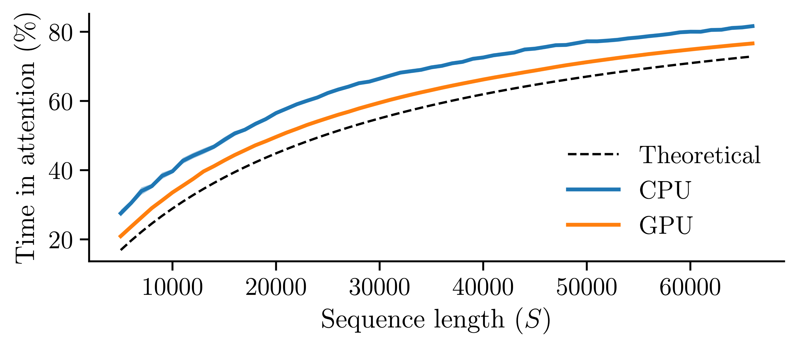
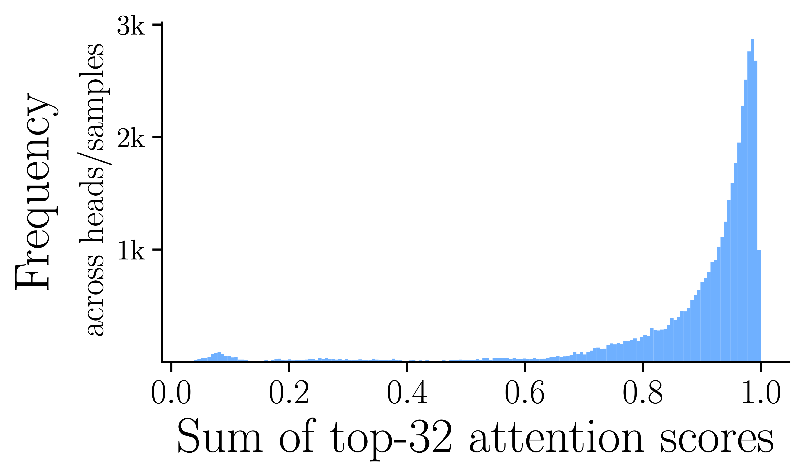
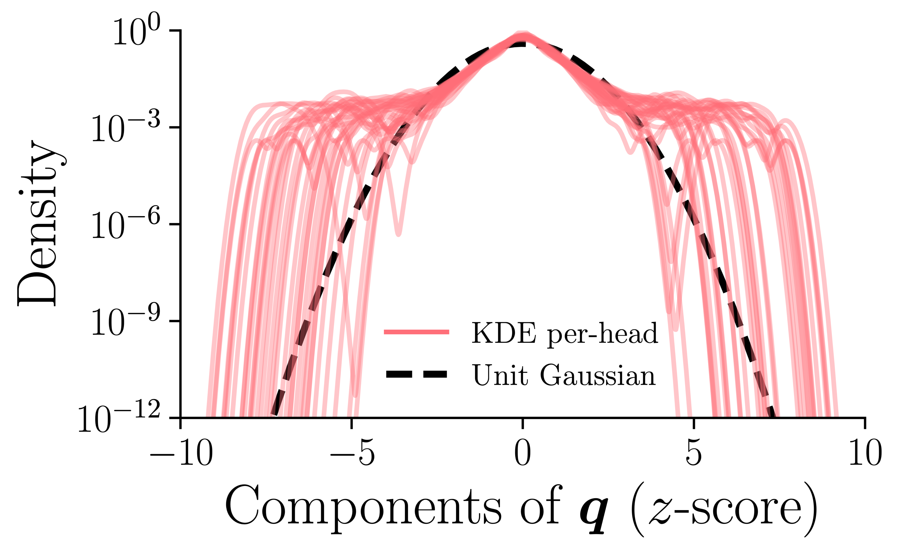
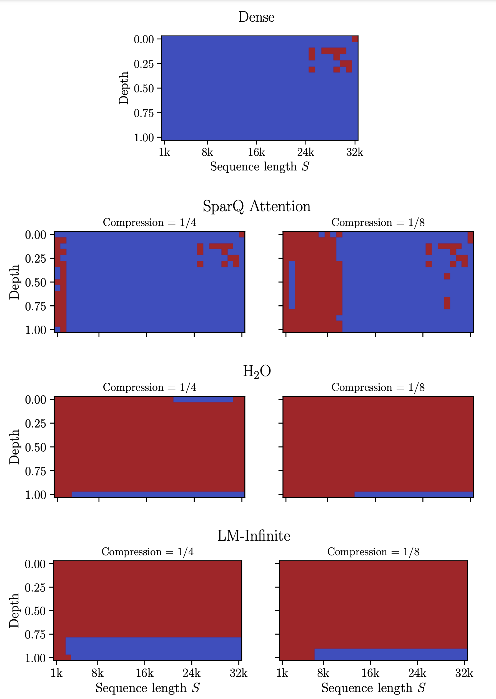
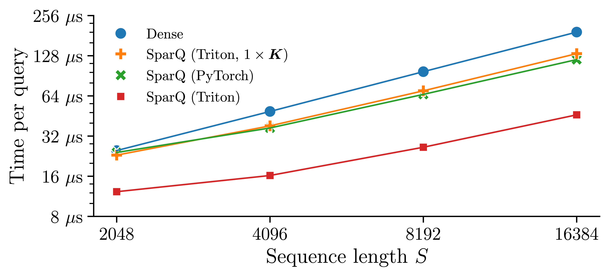

Sparser llamas run faster — speed up LLM inference with SparQ Attention

When ChatGPT launched in 2022, it became evident how powerful the Transformer architecture, when trained on large corpora of text, is for handling natural language processing tasks. The performance of these Large Language Models (LLMs) has been attributed to the in-context learning capabilities that emerge with large-scale training.
In-context learning enables the model to use arbitrary textual information – such as instructions, examples, and documents – embedded in the prompt to understand and perform the task at hand. Rather than requiring task-specific fine-tuning, LLMs can dynamically handle a wide variety of input tasks at inference-time based on the user-provided context.
To leverage the benefits of in-context learning, there has been demand for LLMs to support increasingly long input sequences. Language models typically employ a Key-Value (KV) cache to store each token’s corresponding vectors to prevent recomputing them for each autoregressive generation step. However, for long sequences, performance is bottlenecked by how fast the hardware can retrieve the KV cache – which scales linearly with sequence length and batch size – from memory. This, in turn, limits the speed at which tokens can be generated – a key usability metric for LLMs.
We can see this behaviour when examining how an LLM would spend its time (assuming peak A100 performance) generating a single token:
| Llama 2 7B, A100 latency | \(S\) = 1024 | \(S\) = 128k |
|---|---|---|
| KV cache data transfer | 0.3ms (3.8%) | 43.0ms (82.9%) |
| Attention compute | 0.0ms (0.0%) | 0.2ms (0.4%) |
| Parameter data transfer | 8.6ms (95.7%) | 8.6ms (16.6%) |
| Non-attention compute | 0.0ms (0.5%) | 0.0ms (0.1%) |
| Total | 8.9ms | 51.8ms |
We also observe empirically how attention dominates the overall generation time as sequence length scales:

As we can see, not only does the time to generate a token scale with sequence length, the proportion of time that is spent fetching the KV cache grows to dominate all other data transfer and compute. This is because, despite hardware developments such as High-Bandwidth Memory (HBM), LLM inference is bandwidth-bound on modern AI accelerators.
Given how costly it is to transfer the entire KV cache each generation step, we ask is it possible to sparsely fetch data from the KV cache while approximating true attention?
Approximating Attention
To sparsely fetch data from the KV cache, we need to understand what parts of the KV cache are most influential when performing the attention operation. Let’s consider the attention equation:
the \(\mathrm{softmax}\) operation defines the attention scores which, for each token in a sequence length \(S\), outputs a number between 0 and 1, such that the sum of all attention scores across \(S\) equals 1. Tokens that correspond to higher scores are more influential than tokens that correspond to lower scores. We observe that relatively few tokens are needed to reasonably approximate the output. For example, if we consider the sum of the top 32 attention scores across all layers and heads of a Llama 2 7B model (over many samples), we see the following distribution:

The distribution shows that in most settings, most of the attention score mass is comprised of just a fraction of the tokens (32 tokens in sequences between 1k-2k). This means that other tokens will have attention scores close to 0, and therefore have little bearing on the overall attention output.
We can exploit the sparsity seen in the scores to help reduce the data transfer associated with attention – after we’ve loaded the key cache onto the accelerator and calculated the attention scores, we can identify the top-\(k\) (where \(k\) is a user-defined hyperparameter) largest scores, and then fetch only the value cache elements that are associated with the top-\(k\) scores. Assuming \(k\) is much smaller than the sequence length, this can significantly reduce the amount of the value cache is transferred onto chip. This approach is sometimes called Top-\(k\) Sparse Attention and has been investigated in works such as Sheng et al., 2023 and Gupta et al., 2021.
This approach to reduce attention data transfer is limited by the fact that the entire key cache must be fetched to calculate the attention scores. This means that overall KV cache data transfer can never be reduced by 50% or more. While this is a good saving, we could still be transferring a huge amount of data during each generative step. To overcome this, we need to identify a way of reducing the amount key cache data that is also transferred.
In a similar way we used properties of sparsity in the attention scores to reduce data transfer, we can identify and exploit other sparse structures within the attention tensors. Let us consider how attention scores are calculated, for a query vector \(\boldsymbol{q} \in \mathbb{R}^{1 \times d_h}\) and the \(i\)th key vector in the sequence \(\boldsymbol{k}_i \in \mathbb{R}^{1 \times d_h}\) (where \(d_h\) is the head dimension):
The attention score is simply the dot product between the query and the given key vector. Note that if an element of the query is zero, then regardless of the value of the corresponding key element, the attention score remains the same – there is no need to fetch this key element. This suggests that one could approximate attention by only loading elements of the key which correspond with large magnitude elements of the query.
If we examine the incoming query vectors, we observe that their distributions are heavy-tailed, with many elements close to zero and a small number of elements having large magnitudes (results shown for many samples over all heads and layers of Llama 2 7B):

These empirical statistics suggest that one can approximate attention scores by considering the top-\(r\) (where \(r\) is another user-defined hyperparameter) elements of the incoming query vector, and only loading the corresponding \(r\) element of the key cache – reducing the data transfer associated with the key cache.
By combining both approaches, we can reduce the data transfer of the whole KV cache. We call our method SparQ Attention, which we outline below.
SparQ Attention

The SparQ Attention method can be seen in the diagram above. There are three key steps to the algorithm:
- Step 1: First, identify the top-\(r\) largest magnitude elements of the query vector. Fetch the corresponding elements from the key cache and use them to calculate approximate attention scores.
- Step 2: Using these approximate attention scores, find the top-\(k\) largest scores and fetch the corresponding tokens from both the key cache and value cache. Calculate the output of the attention operation, using the top-\(k\) keys and values.
- Step 3: Calculate the estimated total score \(\alpha\) assigned to the top-\(k\) positions using the approximate attention scores. We use this attention score to interpolate between the attention output calculated in Step 2, and a mean value vector, \(\bar{\boldsymbol{v}}\). This step can often improve task performance, but is not the focus of this post – please read the paper here to find out more about this step.
For a sequence length \(S\), head dimension \(d_h\), and hyperparameters \(r\) and \(k\), the number of KV cache elements transferred for a single attention head forward-pass with SparQ is given by
On the other hand, for conventional "dense" attention, the number of scalar elements transferred is
By varying \(r\) and \(k\), we can tune the data transfer compression ratio
trading-off approximation accuracy for token generation speed-up.
SparQ Attention can also accommodate models that use Grouped Query Attention (GQA) - in which multiple queries share the same KV cache – by adapting the first step to sum the magnitudes of the queries within each group before calculating the top-r components. Although the third step of SparQ Attention can also be employed with GQA models such as Llama 3 and Mistral, we found empirically that they performed better when this step is omitted.
Experimental Results
We examined how SparQ Attention performs over numerous relevant long-sequence tasks, evaluating performance on question answering, summarisation, perplexity and text repetition. For this, we adapted standard downstream tasks and datasets to generate examples of sequence lengths between 1k-2k tokens, the details of which can be seen in the paper. To evaluate how SparQ Attention compares against other techniques which sparsely access or iteratively remove data from the cache, we also ran experiments with H\(_2\)O, LM-Infinite and a variant of FlexGen.

Our experimental setup consists of measuring task performance as the amount of attention transfer is decreased (as determined by \(k\) and \(r\) in the case of SparQ). We considered a range of publicly available LLMs, including Llama 2 and 3, Mistral, Gemma and Pythia (not shown above). Please refer to Appendix A of the paper for full results.
The results show that as compression is increased and the amount of data transferred is reduced, SparQ Attention is robust across all tasks and models tested. Generally, we find that we can achieve up to 8\(\times\) compression with little to no loss in task performance. H\(_2\)O can attain good performance on some tasks such as TriviaQA and WikiText-103, but tasks including SQuAD and Text Repetition can be more challenging and degradation occurs. LM-Infinite performance degrades across all tasks, demonstrating that the tasks do not permit the trivial solution of discarding the long input sequence.
One aspect of SparQ that makes it particularly capable is that no data in the KV cache is deleted – it is simply not all accessed at every iteration. This has the benefit, over methods such as H\(_2\)O (an eviction approach with iteratively deletes items from the cache), of retaining good performance on tasks that require information retrieval. A common benchmark used to evaluate this is Needle in a Haystack, in which a text needle is inserted into the sequence at various depths, and the model is prompted to retrieve information from the needle.

In the figure above, for various sequence lengths and needle inserted into various depths within the sequence, blue indicates that the model was accurately able to retrieve information, and red indicates otherwise. As can be seen, SparQ Attention attains performance very close to its dense counterpart, and vastly outperforms other sparse attention techniques.
Benchmarking Attention
The results seen so far demonstrate that SparQ Attention can attain excellent task performance, even under high compression rates. These results use a theoretical cost model of the total memory transfers (number of scalar elements transferred to and from memory per token), allowing us to evaluate SparQ Attention independently of hardware setup and number formats used. To validate our method works well in practice, we performed a set of microbenchmarks of an attention operation in isolation.

We benchmarked different SparQ implementations, with the primary differences between implementations being the library (PyTorch vs Triton) and whether we store two copies of the key cache, one in a \(d_h\)-contiguous layout and one in a \(S\)-contiguous layout (which allows for efficient gathers on either axis). These microbenchmarks, ran on A100 (40GB) with batch size 64, find that even for modest sequence lengths, SparQ Attention can speed up the token generation time.
Summary
In this work, we have presented SparQ Attention, a novel technique for unlocking faster inference for pre-trained LLMs. Our proposed technique modifies the attention mechanism to access only the relevant tokens from the KV cache at every generation step, leading to considerable data transfer savings. This is particularly beneficial in long sequence length regimes, where inference speed is often bottlenecked by memory transfers rather than computation.
Our method also highlights the advantages of maintaining the full KV cache in memory for task performance by comparing SparQ Attention to other popular strategies which discard information from the input sequence. These alternative approaches rely on heuristics or predefined policies to determine which items in the KV cache to remove, which may not generalise across the wide range of applications LLMs are used for. We show that SparQ Attention is robust across numerous tasks and models, making it a viable technique for reducing inference times in unseen settings.
Read The SparQ Attention paper: arxiv.org/abs/2312.04985
This work was carried out by Luka Ribar, Ivan Chelombiev, Luke Hudlass-Galley, Charlie Blake, Carlo Luschi and Douglas Orr. Check out our poster at ICML 2024 (poster #511, Wednesday 24th July at 10:30AM).